Among the numerous efforts towards digitally recovering the physical world, Neural Radiance Fields (NeRFs) have proved effective in most cases. However, underwater scene introduces unique challenges due to the absorbing water medium, the local change in lighting and the dynamic contents in the scene. We aim at developing a neural underwater scene representation for these challenges, modeling the complex process of attenuation, unstable in-scattering and moving objects during light transport. The proposed method can reconstruct the scenes from both established datasets and in-the-wild videos with outstanding fidelity.
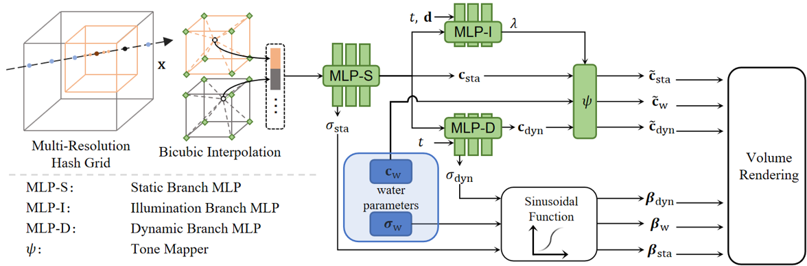
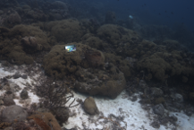
Curacao
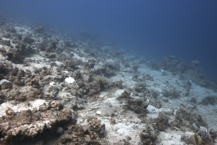
Redsea
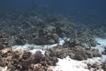
Japanese
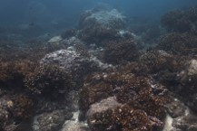
Panama
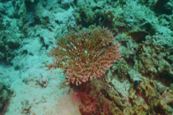
Coral
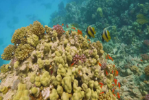
Composite
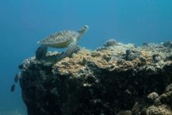
Sardine
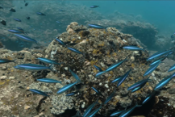
Turtle
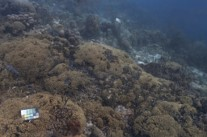
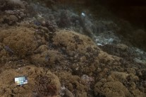
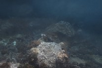
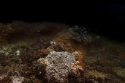
@inproceedings{tang2024uwnerf,
author = {Yunkai Tang, Chengxuan Zhu, Renjie Wan, Chao Xu, Boxin Shi},
title = {Neural Underwater Scene Representation},
journal = {CVPR},
year = {2024},
}